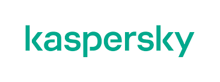
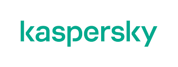

Our Mision, Vision & Values
Mission
Our mission is to offer the best
solutions to the customers with the
best innovative and quality methods
Vission
Our vision is to be the leading and best
preferred company in
1. Value Added Services
2. ICT Network Infrastructure
3. Wireless Internet Service
4. Security Systems
5. Telemetry Systems
Values
Customer satisfaction
Excellence
Reliability
Team - work and collaboration
Honesty
Innovation
Growth
1Fostering Relationships
We understand that business relations are the foundation of
success, and that’s why our priority is to build strong lasting
relations with our customers, and our partners. We see our
clients’ business as ours, and we work continuously on bettering
and fostering global partnerships, to be able to provide the
optimum know-how and support to our customer
2Distinguished References
Our outstanding record in catering to the security needs of
the top players in all the industries we work with, armed
with years of experience and extensive know-how, allows us
to offer, not just products or services, but customized
comprehensive solutions that suites your company’s current
and future needs
3 Advanced Security Intellectual Property
Our extensive work across many fields has enabled us to
build a massive use case library that covers a vast array of
attacks. This has familiarized us, and prepared us with our
clients to almost all types of potential hazard We also
developed using Artificial Intelligence as a solution for
Advanced Threat Protection to protect your organization
before any attack happens
4Not Products but Solutions
We enable our customers to maximize the utilization of their
available tools. Through our experience with use cases, and
familiarity with various attacks, accumulated through the years,
we are able to customize our clients’ systems to tune
themselves and distinguish real threats from false positivity, thus
saving our customers time and resources and allowing their
security team to address the real attacks
 
